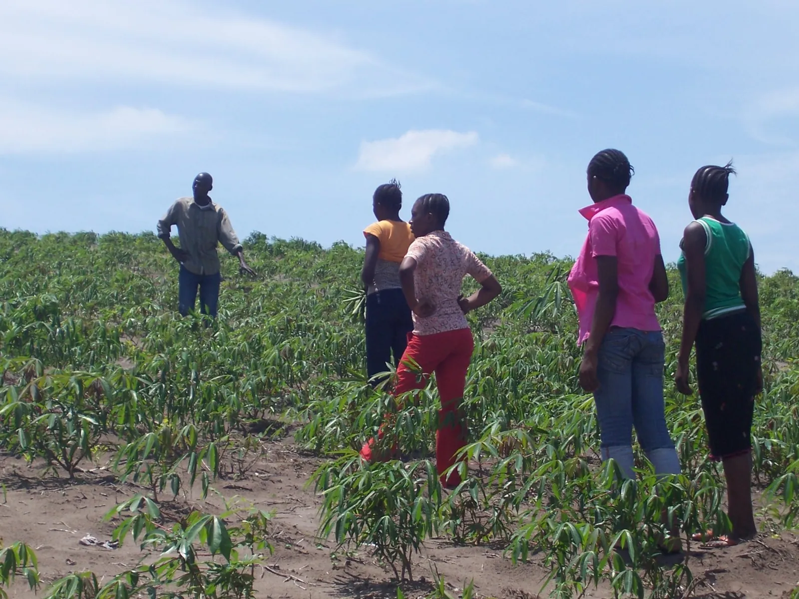
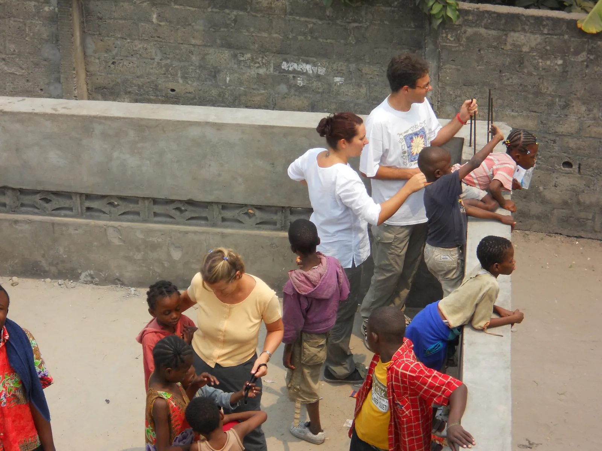
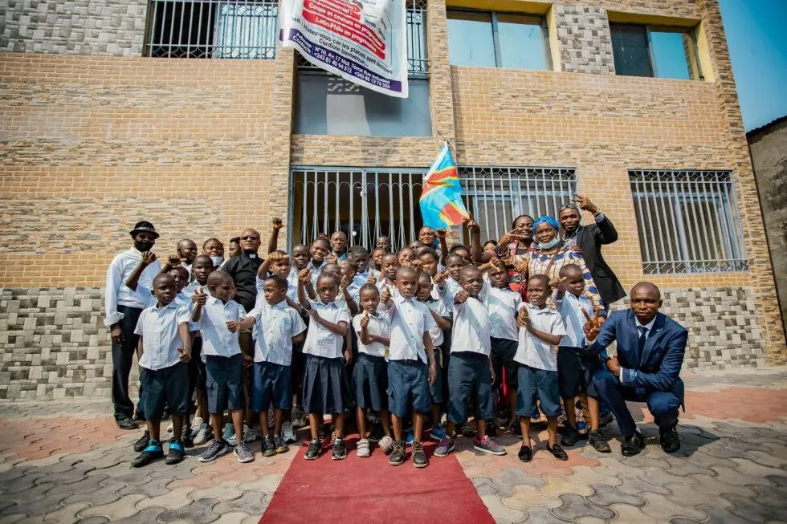
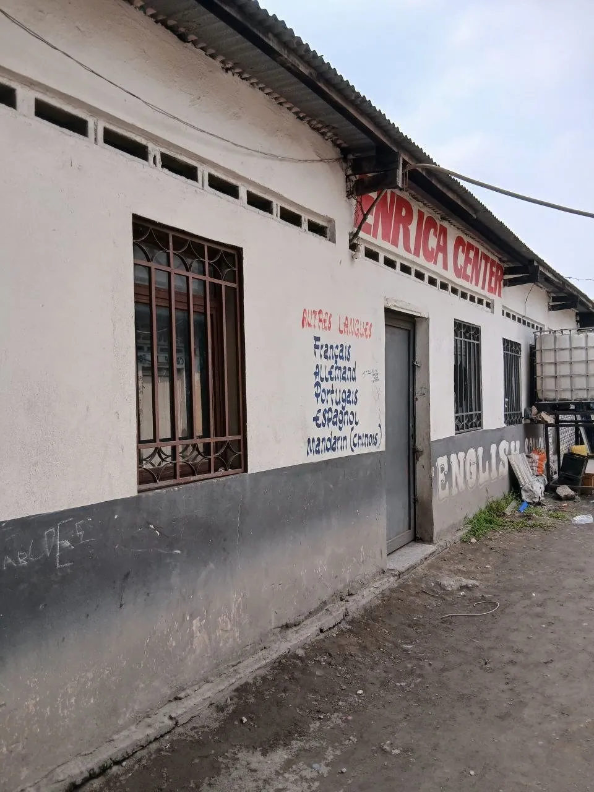
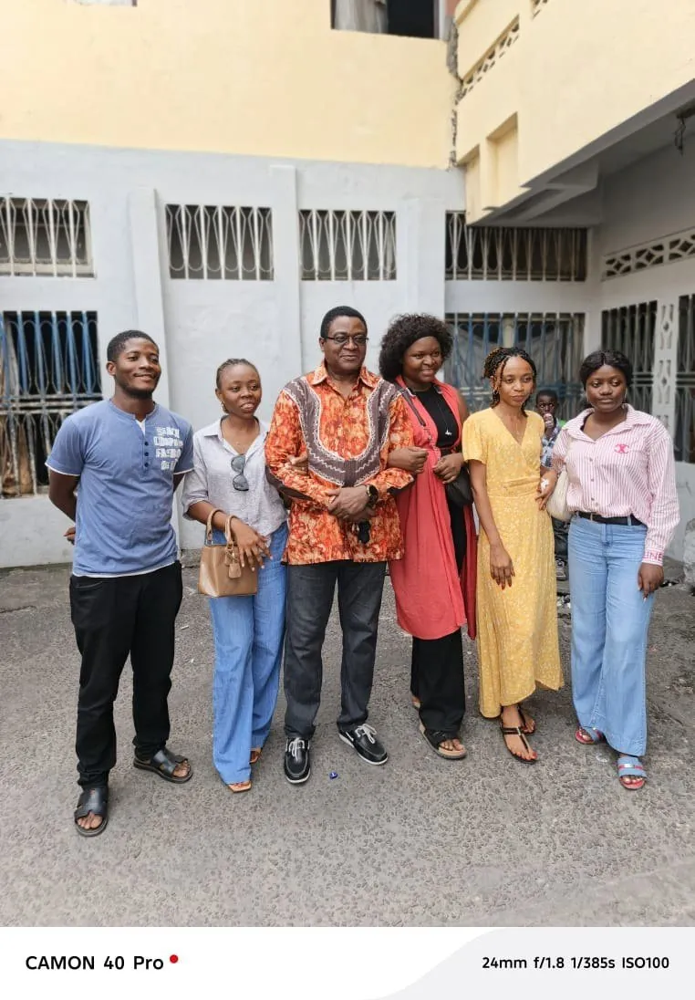
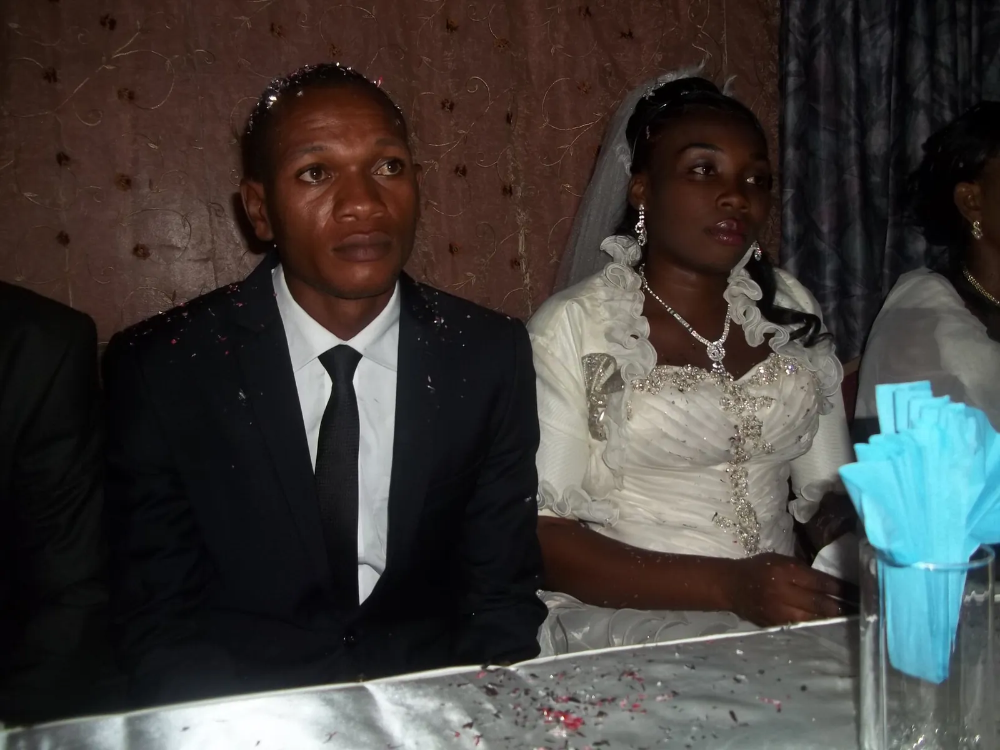

Construire Demain
Nous bâtissons les fondations d'un avenir radieux pour chaque enfant.
Découvrez nos projets structurants pour l'éducation, l'autonomie alimentaire et le développement communautaire.
Nos Chantiers Prioritaires
Extension Scolaire & Modernisation
Le complexe scolaire Saint Charles entre dans sa phase finale de finition. Ce projet ambitieux ne se limite pas aux salles de classe: il inclut la modernisation complète du dortoir pour offrir un environnement de repos sécurisé et confortable, essentiel à l'équilibre et à la réussite académique de nos protégés.
- Finition des façades et aménagement des salles
- Nouveaux équipements sanitaires et literie
- Espaces d'étude connectés et bibliothèque


Projet Agro-pastoral de Pongwene
L'indépendance de la Maison Enrica passe par la terre. Nous développons actuellement 50 hectares sur le Plateau de Bateke. Ce projet agro-pastoral à Pongwene vise à garantir la sécurité alimentaire de l'institution tout en créant un modèle économique circulaire et durable.
"Cultiver l'avenir pour nourrir l'espoir: une transition vers l'autofinancement total."
Pont International pour l'Adoption
Nous renforçons nos structures de soutien pour l'adoption nationale et internationale. En collaboration étroite avec la RDC, l'Italie et le Vatican, ce pont institutionnel vise à faciliter le placement des enfants dans des familles aimantes tout en garantissant un suivi rigoureux et éthique.
RDC
Origine
ITALIE
PARTENAIRE
VATICAN
Tutelle

Nos Réalisations & Victoires Humaines
La plus belle preuve de notre impact réside dans le parcours des enfants qui ont grandi au foyer et qui ont réussi leur vie.

École Saint-Charles
Une réalisation majeure de la Maison Enrica, axée sur l'amélioration des infrastructures et le soutien à l'éducation, afin d'offrir aux élèves un environnement d'apprentissage sain et motivant.

Centre de Formation
Une initiative de la Maison Enrica dédiée à l'apprentissage et à la maîtrise de diverses langues, notamment l'anglais, le français, le portugais, l'espagnol et le mandarin (chinois). Ce centre vise à offrir de nouvelles opportunités d'ouverture et de développement personnel aux apprenants.

Des vies autonomes et actives
De nombreux enfants du foyer sont aujourd'hui pleinement insérés dans la vie active à Kinshasa et à travers le pays. Ils travaillent, fondent des familles et contribuent positivement à la société.
Bourses d'études et voyages
Grâce au soutien indéfectible de nos réseaux de bienfaiteurs et de nos partenaires internationaux au Vatican et en Italie, certains enfants méritants ont eu l'opportunité de poursuivre des études supérieures et de voyager à l'étranger pour enrichir leurs compétences.

Foyers stables et épanouis
Le modèle familial dispensé au foyer porte ses fruits: plusieurs jeunes filles ayant grandi à la Maison Enrica ont construit des unions sacrées, sont aujourd'hui mariées, mères de famille et transmettent à leur tour les valeurs d'amour reçues ici.
Engagement dans l'Armée et la Police
Plusieurs de nos anciens garçons ont choisi la voie de l'engagement citoyen suprême. Aujourd'hui, deux à trois d'entre eux servent fièrement au sein des forces armées nationales (FARDC) et d'autres protègent la population dans les rangs de la Police Nationale Congolaise.
Devenez Partenaire du Futur
Chaque pierre ajoutée à l'école, chaque hectare cultivé et chaque famille unie commence par votre soutien.